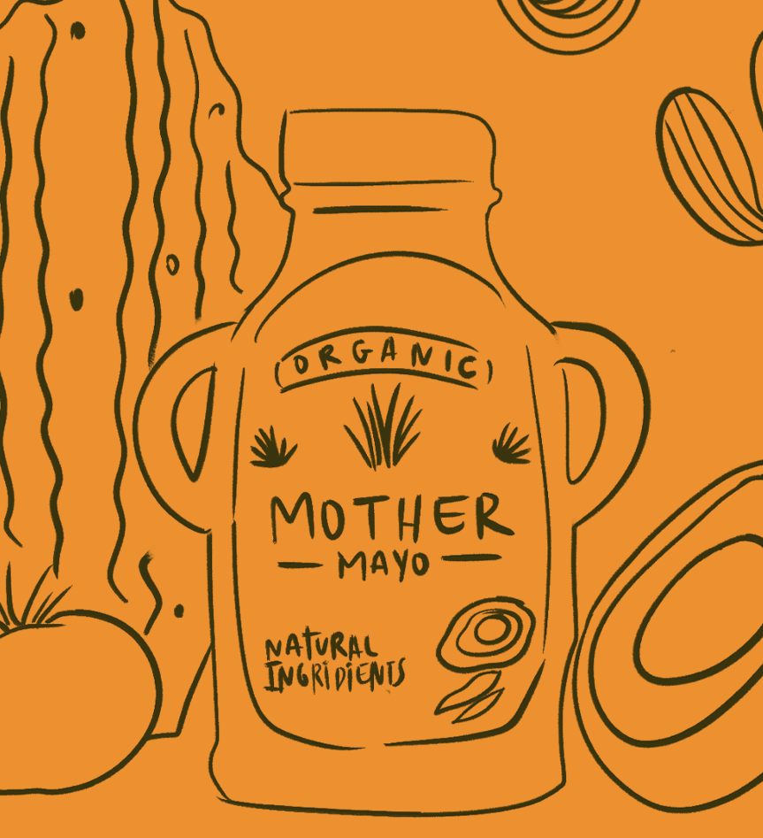
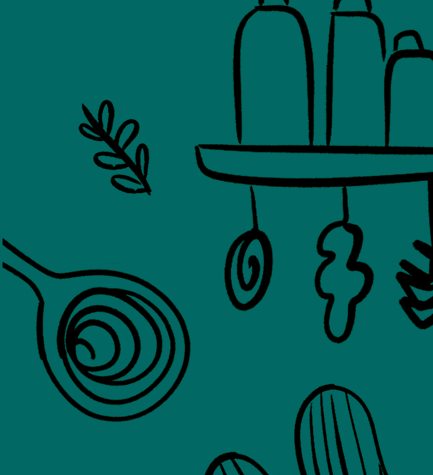
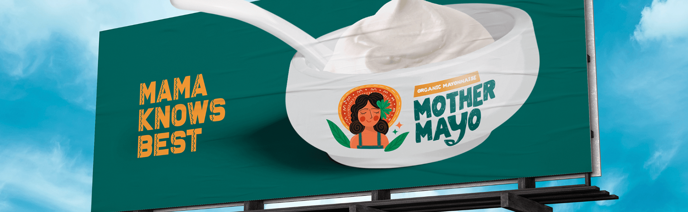
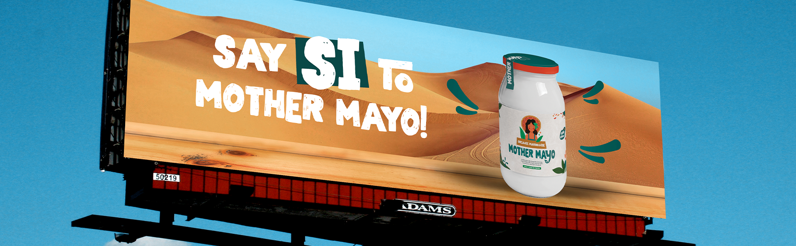

Mother Mayo 🌞🌮🌵
This was my entry test at the 4th largest advertising company in the U.S. I was tasked with developing a campaign for a mayo brand. Everything you're about to see came from my Latino perspective. And yes, I got in!
The Idea And The Process
- I aimed to merge my Latino heritage with the campaign concept, bringing my identity to life through "Mother Mayo," a Latina figure. This approach allowed me to create a personal, authentic campaign that also highlighted my design skills.
- I began by sketching the "Mother Mayo" brand. These early details helped shape the brand concept, the color palette, and the maternal figure, leading to the headlines and the final campaign concept.


Concepts Created:
- Mama Knows Best: This design combines simplicity with a bold Mexican-inspired look. The logo features a mother figure, while the headline "Mamá knows best" adds a cultural twist. It highlights the brand’s authenticity as an organic mayonnaise brand, positioning "Mother Mayo" as the top choice for discerning customers. After all, when it comes to choosing what’s best, a mother always knows.
- Say SI: This ad incorporates Spanish culture, using the word "si" while highlighting Mexico's breathtaking desert landscape. It also showcases the product’s eye-catching packaging, appealing to consumers who value both style and substance.


Project Overview
- Time Taken: 1 Day.
- Tools Used: Photoshop, InDesign, Procreate.
- Concept: The concept behind this campaign was to infuse my Latino heritage into the design, bringing my personal identity to the forefront through the "Mother Mayo" concept. This approach allowed me to craft an authentic and meaningful campaign that not only reflects my cultural background but also showcases my design abilities.